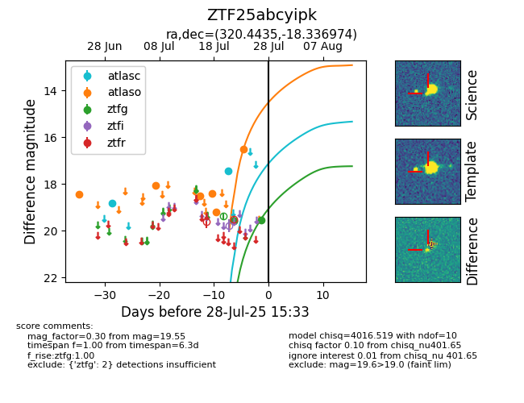

Target ZTF25abcyipk at 2025-07-28 15:33, see:
FINK: fink-portal.org/ZTF25abcyipk
Lasair: lasair-ztf.lsst.ac.uk/objects/ZTF25abcyipk
ALeRCE: alerce.online/object/ZTF25abcyipk
alt names
ZTF25abcyipk (ztf,fink)
coordinates:
equatorial (ra, dec) = (320.4435,-18.33697)
galactic (l, b) = (31.7133,-41.20205)
photometry
last atlasc=17.44, atlaso=16.51, ztfg=19.55
2 atlasc, 6 atlaso, 2 ztfg detections
